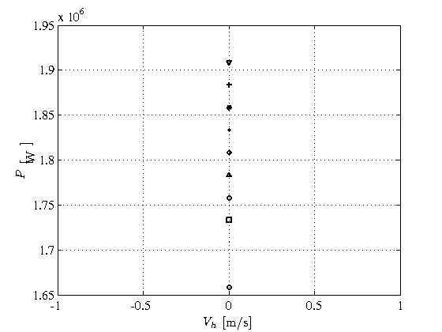
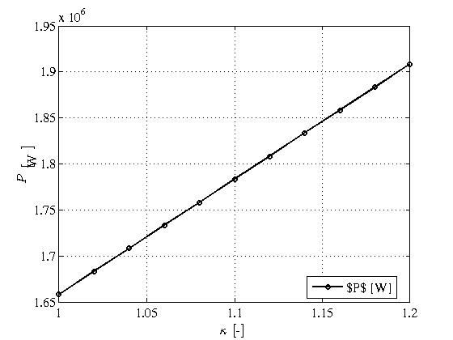
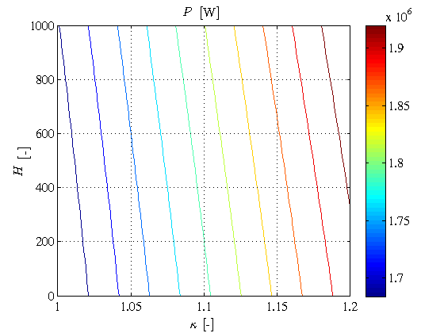
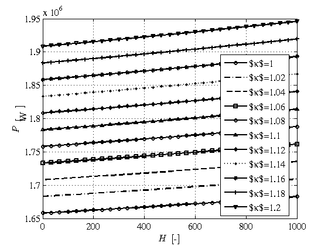
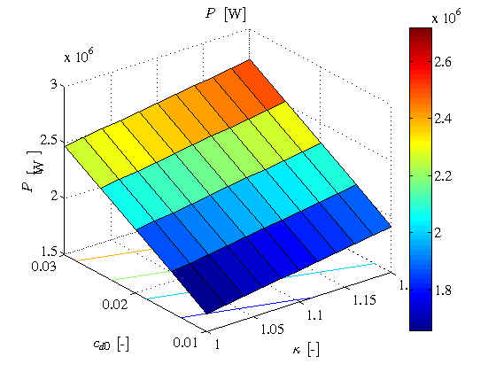
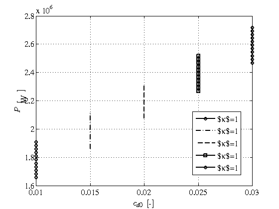

Contents
Parameter analysis of energy helicopters
This demo shows how to use energy functions in order to understand how to analyse helicopter design parameters and their potential impact on the aircraft performance. The main goal of this demo is to show how to consider variation of helicopter parameters and how to analyse the influence of the parameter variation on the helicopter performance.
One important remark is that because human beings we are able to visualize at most functions which depends on two variables at the momento of writing this notes heroes toolbox allows for determination of function of at most two variables.
Another heroes implicit rule is that despite the fact heroes energy functions in general can compute n-dimensional parameter variations, in a cartesian product sense, plot functions can only handle two variables dependencies.
close all
setPlot;
Helicopter parameter variation for a scalar flight condition (hover)
First we setup heroes environment by defining an ISA+0 atmosphere, a SuperPuma helicopter and a hover condition at sea level with gross weight of MTOW and fuel mass corresponding to the aircraft maximum fuel mass. Flight codition fc is also called a scalar flight condition in the sense that we are defining just one flight condition.
atm = getISA; he = superPuma(atm); fc = getFlightCondition(he);
The next step is to input a variation of a helicopter parameter. The most direct way to do this is to define a cell of helicopters by transforming a reference helicopter by changing the desired parameter. For instance, let us consider we want to analyse how the variation of the induced power correction factor changes the required power for hovering. Then, we build up a cell of SuperPuma energy helicopters by varying the main rotor induced power correction factor kappa between 1.0 and 1.2 using the function getParametricCellHe. The function getParametricCellHe creates a cell of helicopters given a reference helicopter, a vector of parameter to be assigned to a valid field name of the reference helicopter. In this example a parametric variation of the reference helicopter is created by varying the induced power correction factor between 1.0 and 1.2 while keeping constant the rest of the helicopter parameters. First we define the induced power correction factor vector, then we define the parameter string which should be a valid fieldname, including dots in case of a substructure field and then we use getParametricCellHe. The variable hei stores a cell of 11 helicopters.
kappai = linspace(1.0,1.2,11);
parstr = 'mainRotor.kappa';
hei = getParametricCellHe(he,parstr,kappai);
Next, we compute the power state corresponding to the hover condition which is a scalar one, and to the cell of parametric helicopters, which is a vector one. getEpowerState produces a structure with vector fields with size equal to the size of the parametric helicopters.
ps = getEpowerState(hei,fc,atm);
If we try to plot directly such a power state using plotPowerState we can find that the relevant variable which is the induced power correction factor it does not belong to the power state so there is no information of the helicopter at the power state level. However, we can push plotPowerState to try to plot the power state ps by representing power as a function of the, let us say, forward velocity which is for every power state obviously zero. As it can be expected a vertical line of points is plot because forward velocity is constant and equal to zero and power is varying because of the induced power correction factor variation. The lower circle mark corresponds to the lower value of induced power correction factor and the upper down triangle represents the higher value of induced power correction factor.
axds = getaxds('Vh','$V_h$ [m/s]',1); azds = getaxds({'P'},{'$P$ [W]'},1); plotPowerState(ps,axds,[],'defaultVars',azds);
We would like to represent the required power for hovering as a function of the induced power correction factor but the power state structure does not know anything about the parameter variation undergo by the helicopter. In order to overcome such a deficiency we should add in some way the helicopter parameter information to the power state structure.
The function coswmf_cos2swmf transforms the power state cell of structures with matrix fields, ps, and the helicopter cell of structures, to a single structure with matrix fields ready to be used by plotPowerState by adding the parameter data stored in the field name defined by the parameter string, including dots, 'mainRotor.kappa'. Basically coswmf_cos2swmf performs two actions: * transforms a COSWMF (Cell Of Structures With Matrix Fields), i.e. the variable ps, and COS (Cell Of Structures), i.e. the variable hei, into a SWMF (Structure With Matrix Fields), i.e. ppw, which can be used by plotPowerState. * adds the helicopter parameter variation defined by the string parstr to the resulting SWMF, pps, as an additional field of the power state structure
pps = coswmf_cos2swmf(ps,hei,parstr);
The variable pps is a power state structure in which each fieldname is a vector of size the size of the induced power correction factor, that is a row vector of size 1x11, because flight condition is scalar, hover, and helicopter is a vector of size the size of the induced power correction factor. Furthermore, pps is not an actual power state because pps contains an additional fieldname which is the name of fieldname especified as input of coswmf_cos2swmf, that is pps contains a fieldname pps.kappa with a row vector of size 1x11 which is extracted from the cell of helicopters hei by collecting the values of the field 'mainRotor.kappa'. After transforming the cell of structures with matrix fields, ps, to the structure with matrix fields, pps, plotPowerState can be used to plot in a meaningful way, the helicopter parameter variation. As it can be seen the required power increases with the value of the induced power correction factor in a linear way.
axds = getaxds('kappa','$\kappa$ [-]',1); axps = plotPowerState(pps,axds,[],'defaultVars',azds);
Helicopter parameter variation for a vector of flight conditions
A vector of flight conditions is just a flight condition structure in which each field of the structure is a vector of real values. In this section we are going to compute the required power for hovering as a function of the altitude and induced power correction factor
The first step is to define a vector of hovering flight conditions at different altitudes. Let us consider a vector of flight conditions, fci, by varying the altitudes between sea level and 1000 meters.
H = linspace(0,1000,31);
fci = getFlightCondition(he,'H',H);
Now using the previously defined cell of helicopters in which a parametric variation of induced power correction factor has been carried out we can compute the corresponding power state, ppsi, which represents a power state function of the two variables, that is, function of altitude and induced power correction factor. As before, getPowerState returns a cell of power state structures of size the same size then the helicopter input argument, that is a cell row vector of size 1x11. However, each slot of the output cell contains a power state structure with fields containing a row vector of size 1x31 which represents the variation of the power state with respect to the flight altitude
ppsi = getEpowerState(hei,fci,atm);
Once again, the ppsi power state does not have any information about the induced power correction factor variation. Therefore we should add it using the function coswmf_cos2swmf as before. Now, the resulting power state structure ppsij is a structure with fieldnames containing matrices of size
ppsij = coswmf_cos2swmf(ppsi,hei,parstr);
Then, using the previously defined x and z axis we should add a new y axis by defining the y variable as the altitude
ayds = getaxds('H','$H$ [-]',1);
Once the cell of structures with matrix fields, ppsi, has been transformed to the structure with matrix fields, ppsij, plotPowerState can be used to plot in a meaningful way, the helicopter parameter variation. Now and because the power state depends on two variables we can use the 3D representation feature of heroes plot functions which by default features contour plots and the parametric plot3dMode which represents the power state variable, required power, as a function of altitude being the induced power correction factor id the parameter
plotPowerState(ppsij,axds,ayds,'defaultVars',azds); plotPowerState(ppsij,ayds,axds,... 'defaultVars',azds,... 'plot3dMode','parametric' ... ); 
Helicopter bi-parameter variation for a scalar of flight conditions
In this section we are going to plot for a hover flight condition the required power as a function of the induced power correction factor and the average drag coefficient. These two variables are helicopter parameters and therefore, a cell array of helicopter should be created by the getParametricCellHe function.
First, we define the parameter string to find the corresponding fieldname and the values of average drag coefficients
cd0j = linspace(0.01,0.03,5);
parstr2 = 'mainRotor.cd0';
Then, getParametricCellHe allows for a second pair of parameter string and parameter vector of parameter values just in order to build up a cell array of size 11x5
heij = getParametricCellHe(he,parstr,kappai,parstr2,cd0j);
Now we are ready to compute the power state for the cell array of helicopters, heij, and the scalar flight condition at sea level, fc. The resulting power state psij is a cell array of size 11x5 which each slot of the cell array contains an scalar value.
psij = getEpowerState(heij,fc,atm);
Before plotting the bidimensional cell array we are asked for adding to the cell array of scalar power states the bi-parameter variation information. Once again function coswmf_cos2swmf adds such information by especifying both parameter strings, i.e. 'mainRotor.kappa' and 'mainRotor.cd0'. Therefore we transform the cell array of scalar power states, psij, into a structure with 2d-matrices fields, pcsij. As it is expected each field of the structure pcsij contains a matrix of size 11x5 elements.
pcsij = coswmf_cos2swmf(psij,heij,parstr,heij,parstr2); ayds = getaxds('cd0','$c_{d0}$ [-]',1); plotPowerState(pcsij,axds,ayds,... 'plot3dMethod',@surfc,... 'defaultVars',azds ... ); plotPowerState(pcsij,ayds,axds,... 'defaultVars',azds,... 'plot3dMode','parametric' ... ); 
References
[1] Alvaro Cuerva Tejero, Jose Luis Espino Granado, Oscar Lopez Garcia, Jose Meseguer Ruiz, and Angel Sanz Andres. Teoria de los Helicopteros. Serie de Ingenieria y Tecnologia Aeroespacial. Universidad Politecnica de Madrid, 2008.
DEVELOPMENT NOTES
The following part of code is an attempt to show a trick to easily plot. This should be reworked and if we come up with a solution put after line 68.
In order to overcome this difficulty we can use the following quick hack. We can overload the power state structure by adding a new field with the induced power correction factor information and using plotPowerState. psk = ps; psk.kappa = kappai; axds = getaxds('kappa','$\kappa$ [-]',1); axpsk = plotPowerState(psk,axds,[],'defaultVars',azds);